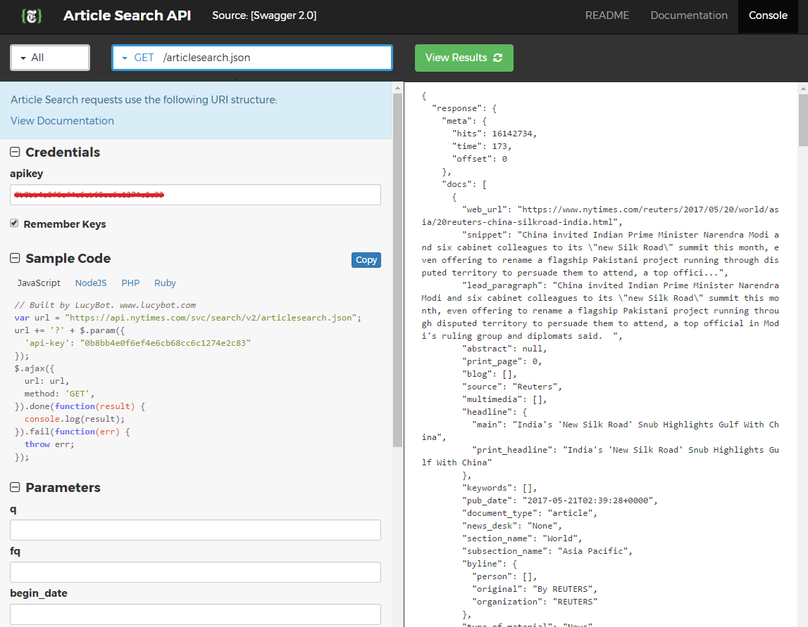

Welcome – I’m so glad you could make it. Today we’ll be learning how to integrate The New York Times API into a website. This tutorial will go over:
Before we get started
This tutorial assumes you have a basic understanding of computers and the internet, as well as HTML and JavaScript. If not, HTML Dog has some great beginner tutorials on both HTML and Javascript.
What is an API
Humans have a fairly standard social etiquette for communicating with one another. A greeting indicates interest in initiating a conversation, timing and tonality help clarify information requested or provided, and a farewell signifies the end of an interaction.
Computers and programs have similar rules for talking to one another. An API, or Application Programming Interface, defines this set of protocols for communication between software components.
We will be going over web API’s in particular, which specify the interaction between a client and a server. In general terms, a client is a computer or program requesting resources, while a server “serves” clients by providing said resources.
These resources range from simple data to more complex functionality. Its transfer is what creates the connectivity that you likely experience every day through various apps and webpages.
What is JSON
The transferred data is usually structured in either XML (Extensible Markup Language) or JSON (JavaScript Object Notation). We will be using the more popular JSON, which is easier to read and requires less text.
It follows the basic format of key-value pairs like this:
{ “firstName”: “Isaac”, “lastName”: “Newton” }The entire expression represents an object. The keys “firstName” and “lastName” represent attributes while “Isaac” and “Newton” specify the corresponding values.
The New York Times API
The New York Times was founded over a century ago and its printed version has the second highest circulation in the US. The New York Times API not only provides access to its articles, but also a wide array of relatedinformation and other insights.
It is offered as eleven distinct API categories. We will be focusing on the Article Search API, which provides database access to one of the most reliable source of news articles dating back to 1851.
Registering for an API Key
Many API’s require keys to make requests which identify the origin and ensure its services aren’t being abused.
Anyone can register for a New York Times API key by signing up.
You should receive an email soon after with your key, which is similar to a username and password and should not by shared with anyone.
Most API’s have a limit to prevent abuse and the Article Search API by default is limited to 1000 calls/day, and 1 call/second.
API Console
Now that you have your very own API key, we can finally get to the fun part – making requests. To help us quickly get a sense of its functionality, The New York Times API has provided us with a console for easily testing out various requests and viewing responses. We’ll use this to quickly test things before integrating into a webpage.
First, copy and paste your newly acquired API key into the “apikey” field. As mentioned, The New York Times API requires the use of a key for every request. You should now see the response on the right-hand side showing a list of the latest articles. The format should look familiar – it’s in JSON as we talked about earlier.
Now let’s go over all the optional parameters specific to the Article Search API – these tell the server exactly what information we are requesting.
- q
- Search query term
- fq
- Filtered search query – allows us to narrow our search using a wide array of criteria such as source and subject.
- begin_date
- Filters by publication starting on or after specified date in YYYYMMDD format.
- end_date
- Filters by publication ending on or before specified date in YYYYMMDD format.
- sort
- Sorts by date. Possible values are newest and oldest.
- fl
- Only return specified fields.
- hl
- Highlights the search term if set to true.
- page
- Specifies which page of results - 10 results are returned per response.
- facet_field
- Returns a count of the top five terms specified by the query.
- facet_filter
- By default, the facet counts ignore filters. Setting to true limits the counts according to the specified filters.
Try playing around with different values. The response on the right should be fairly straight forward. If you get a status code above 400, there should be an error message in the response telling you exactly what went wrong.
And that’s basically it. Well, almost.
We don’t want to be limited to using the console to make requests. The beauty of an API is that it allows us to integrate its functionality into our own webpages and apps.
Request Format
The console was fun, but we can’t rely on it to build a webpage or app. Fortunately, everything that can be done with the console can be done without it. Let’s build a sample request both with and without the console.
There are many request methods, with GET being the most common and is generally used when simply requesting resources. As shown in the API documentation, the Article Search API also uses a GET method.
Each GET request is sent to an endpoint, which specifies the location to
access resources via the API. Appended to the endpoint is our query string.
It begins with a ?, and is composed of the API key and parameters which
tell the server what information we are looking for. Like JSON, it is
formatted in key value pairs, each separated by a &.
Putting everything together – here’s what a typical GET request looks like:
endpoint?api-key=your-api-key&key-1=value-1&key-2=value-2&key-n=value-nBack to our example. Here are the parameters we’ll be using:
If you scroll up to Sample Code, you’ll see the exact same parameters. The URL is the endpoint.
Let’s convert what we’ve inputted in the console into a standard GET request:
https://api.nytimes.com/svc/search/v2/articlesearch.json?api-key=0b8bb4e0f6ef4e6cb68cc6c1274e2c83&q=elon%20musk&begin_date=20170401&end_date=20170430&sort=newest&hl=true&page=3&facet_field=source&facet_filter=true
It might look long and confusing at first glance, but if you carefully look
for the endpoint and parameters, it’s actually very straightforward. You
may have noticed that the space between elon and musk has been replaced
with %20. This is in accordance with percent-encoding, which replaces
special characters with % followed by its ASCII value.
Response Format
The response you should see within the console should look like this:
As you can see from the scrollbar length, the response is rather long. And even though it’s fairly well formatted, it’s still a little difficult to see the bigger picture and make sense of what’s going on. We can do better.
Now let’s try sending our previous GET request by pasting it in the browser as you would a normal web address. You should see something like this in response:

What’s that? You can’t read the response like Neo decoding the Matrix? That’s understandable – turns out the console automatically formatted the response which is why everything looked so neat before. Fortunately, there’s a plethora of JSON formatters online that makes interpreting a much more pleasant experience.
If you don’t have a favorite, I quite like one called JSON Editor Online.
Copy the response text and paste it in the left hand side and click the convert button. You should see this:
Much better. Now we can clearly see that we received an object with 3
properties – response, status, and copyright. Like a folder directory, we
can further expand the properties. response opens up to meta, docs, and
facets.
meta contains some useful meta information. In particular, hits displays
the number of articles fitting our criteria, and offset indicates how many
results are before the current page.
In facets we see that all these articles came from three sources – The New
York Times, Reuters, and AP.
From the brackets, we can tell that docs is an array containing the ten
results on the current page. Let’s expand the first result:
There’s a lot of useful information here – let’s go over just a few. Let’s
start with the web_url – pasting it in the browser actually takes us to the
original article. The snippet contains our query term “elon musk” that has
been bolded since we set hl to true. We see that multimedia
is also an array containing the source of three images:

Appending the addresses to http://www.nytimes.com/ takes us to
those images – here’s the second one:
Looks like we have all we need to make a simple news site.
Creating a simple news site
The goal is finally in sight – we have learned everything necessary to utilize an API to quickly create websites with powerful functionality. We know the format of the request and response, now we just need to figure out how to use JavaScript to do so dynamically.
Before we start, let’s think about what features our website should include.
For our example, let’s allow the user to select the following parameters:
- Search query term
- Begin date
- End date
- Sort
In addition, we’ll also include buttons for moving between pages.
As for output to the webpage, let’s include the following:
- Web URL
- Headline
- Snippet
- Publication date
- Images
First we create an instance of an XMLHttpRequest object, which
allows us to send and receive data with a server – The New York Times API
in this case.
The encodeURIComponent helps encode our search term in case of
spaces and other reserved characters.
We initialize our request with the open method. The first
argument is GET since that is the request method we’ll be
using. Next is the URL we concatenated with the endpoint and parameters. We
set the last to true to indicate we’ll be making an
asynchronous request, meaning the program will continue executing while
waiting for a response.
Finally we send out our request and pass null
since we don’t need to send any other information in the request body.
It’s a good start but we can’t expect users to interact with the JavaScript directly. Let’s build a form in html where they can select the parameter values.
Not bad – the form may not look perfect but we could fix that with a more sophisticated stylesheet later on. More importantly, this simple form gives users the ability to define parameters and send an actual request.
In addition to creating a form, we also added some additional
functionality. We placed our previous JavaScript snippet within
bindButtons, which is called after the HTML loads and adds an
event listener to the submit button. When submit
is clicked, it takes the field values and builds the query string just like
before.
We also added an event listener to the XMLHttpRequest object
itself. This allows other code to continue executing while waiting for a
response. When the response has loaded, we also added some error handling
depending on the status.
Let’s give it a try.
It works – but we’re back to the unformatted output like before. There’s a lot of information, so let’s decide what we’re interested in displaying.
Let’s include the following:
- Web URL
- Headline
- Snippet
- Publication date
- Images
And the results:
Looking good! The headlines also serve as links to the original article. With some nicer formatting, this could almost pass as a real content site!
Try It!Top Stories API
Let’s try one of the other New York Time API’s – the Top Stories API
We follow the same steps as before and start with examining the documentation
We only have three parameters this time - section,
response-format, and api-key. One thing to note is
that the first two parameters are part of the endpoint, rather than the
query string like before.
Once again, let’s examine a sample response format with our JSON formatter.
It looks pretty similar to before. Once again we have an object with some
meta information and a results array containing,
unsurprisingly, the results. Let’s expand the first one to see what
information we are interested in extracting and how to do so.
Great – now we can easily modify our previous code to work with the new API by revising the request and how we interpret the response.
Try It!The End
And that’s it. I hope you now have a greater appreciation for API’s and how to utilize them to quickly create useful websites. There are thousands of API’s out there ranging from image recognition to Pokémon and I’m sure you’ll find something that interests you. So get out there and explore!